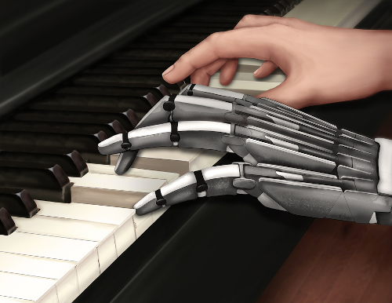

Welcome to the Bensmaia Lab

The overall scientific goal of my research program to understand how nervous systems give rise to flexible, intelligent behavior. The lens through which I address this question is the study of sensory processing: how are robust and flexible neuronal representations of the environment constructed to support behavior? The advantage of sensory neuroscience is that the experimenter has complete control of (or access to) the input and can then track how neural signals relating to this input are transformed as they propagate along the neuraxis. The sensory system of interest is the somatosensory system (of primates), critical to motor behavior and particularly manual behavior.
The overall biomedical goal of my research program is to leverage what we learn about natural neural coding to restore the sense of touch to patients who have lost it, namely amputees and tetraplegic patients, by sensitizing bionic hands through electrical stimulation of the nerve or brain. I am the principal architect of the biomimetic approach, which posits that encoding algorithms that mimic natural neural signals will give rise to more intuitive tactile percepts, thereby endowing bionic hands with greater dexterity. Not only are neuroengineering efforts explicitly informed by neuroscientific ones, they also provide an opportunity to test scientific hypotheses using causal manipulations, in this case electrical stimulation of neuronal populations.
The overall biomedical goal of my research program is to leverage what we learn about natural neural coding to restore the sense of touch to patients who have lost it, namely amputees and tetraplegic patients, by sensitizing bionic hands through electrical stimulation of the nerve or brain. I am the principal architect of the biomimetic approach, which posits that encoding algorithms that mimic natural neural signals will give rise to more intuitive tactile percepts, thereby endowing bionic hands with greater dexterity. Not only are neuroengineering efforts explicitly informed by neuroscientific ones, they also provide an opportunity to test scientific hypotheses using causal manipulations, in this case electrical stimulation of neuronal populations.